Mold Magazine Issue 1, Photography by Thomas McCarty

I'm currently the Director of Design at SSENSE, where I lead and manage a group of designers and art directors on re-launching the visual identity and creating a unified design language across all touchpoints.
JW Anderson for SSENSE. Photography Matthew Tammaro. With Matthew Tsang.

Masthead / Nameplate design for Mold Magazine. A publication about the future of food. — October, 2016
Teresa Teng, Comissioned by Catalogue for their 2015 exhibition Friends Our Family at KK Outlet. — 297 × 420mm, Silkscreened print. October 2015

Logo design for Art Palestine International. Designed with Scott Langer. — October 2014

Poster design and illustration for Miss Ruthless, an ongoing exhibition series on pageantry as method. — 420 × 594mm Digital Print, July 2017. With Matthew Tsang

Hyper, Digital. — May 2015


Record sleeve design for v1984's Becoming N(one)

Lettering — v1984

Lettering — v1984


Matter over Matrix, 3.35 × 3.36 metre mural, series of 2. Installed in the New Museum as part of Adidas' Future Capsule exhibition in the New Museum. Curated by Kamp Grizzly.

Logo design for Leong Leong Architects — December 2016

Lettering for Wet


Logo design, for Satie — October 2013

Teresa Teng, Comissioned by Catalogue


Illustration for the New York Times

Visual essay on Berton Hasebe's digital revival of Jan Van Krimpen's typeface Lutetia. First published in Issue 02 of Talk Magazine. (Read Here)


Visual essay on Berton Hasebe's digital revival of Jan Van Krimpen's typeface Lutetia. First published in Issue 02 of Talk Magazine. (Read Here)


Visual essay on Berton Hasebe's digital revival of Jan Van Krimpen's typeface Lutetia. First published in Issue 02 of Talk Magazine. (Read Here)

Illustration for the New York Times